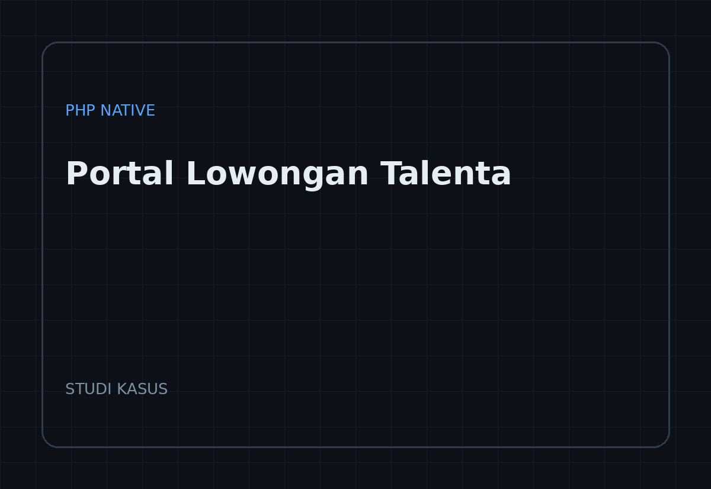

← Kembali ke portofolio
Demo Studi Kasus
Portal Lowongan Talenta
PHP native · 12 tabel SQL

Ini halaman demo statis untuk melihat tampilan project. Aplikasi aslinya adalah PHP/MySQL dan dijalankan terpisah. Link demo akan diganti dengan aplikasi live penuh setelah deployment disiapkan.